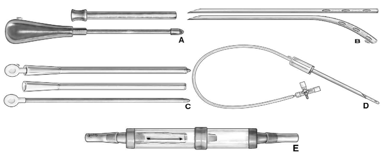
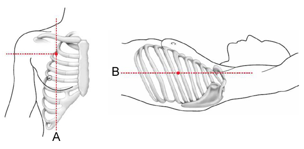
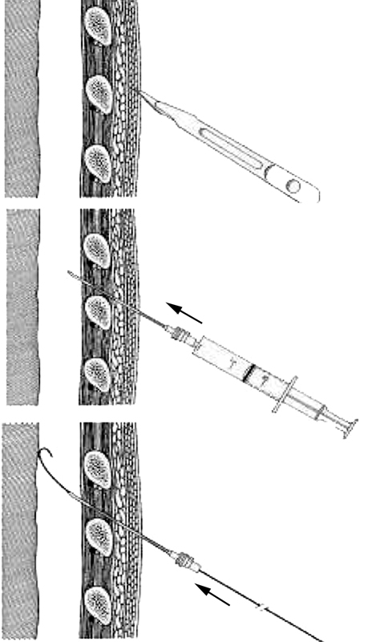

Drainage thoracique
AdulteSpécialité : pneumologie /
Points importants
- Définition = évacuer de l’espace pleural tout épanchement, gazeux ou liquidien
- But = ramener une pression négative dans l’espace pleural et ramener la surface du poumon à la paroi thoracique
- Principe = introduction dans la cavité pleurale d’un drain, pouvant être relié ou on à un système aspiratif
- Si patient instable => décompression de la cavité pleurale au doigt (thoracostomie) ; drainage avec pose d’un drain secondairement
- Asepsie parfaite obligatoire pendant tout le geste
- Ne jamais clamper un drain thoracique chez les patients intubés
Indications
INDICATIONS DE DRAINAGE D’UN EPANCHEMENT PLEURAL
Pathologies
- Pneumothorax
- Hémothorax
- Epanchement pleural liquidien abondant
- Empyème
- Chylothorax
Symptomatiques
-
Respiratoires :
- présence ou aggravation d’hypoxie
- signes de détresse respiratoire (polypnée, balancement thoraco-abdominal)
- signes thoraciques (diminution ou abolition du murmure vésiculaire uni ou bilatéral, emphysème SC, douleur à la palpation, tympanisme ou matité à la percussion)
- ventilation mécanique
-
Hémodynamiques :
- présence / aggravation d’un état de choc hémodynamique, surtout contexte de traumatisme thoracique
- arrêt cardiaque post traumatique
Volume du pneumothorax
-
Pneumothorax spontané :
- recommandations américaines = distance entre le sommet du parenchyme pulmonaire et l’apex de la paroi thoracique ≥ 3 cm
- recommandations britanniques = distance entre la limite externe du poumon et la paroi thoracique ≥ 2 cm)
-
Pneumothorax secondaire à une pathologie respiratoire sous-jacente :
- décollement > 20% de la surface de la surface de l’hémithorax
-
Hémopneumothorax post-traumatique ou iatrogénique :
- décollement > 20% de la surface de l’hémithorax
EN PRE-HOSPITALIER
-
Suspicion de pneumothorax compressif avec :
- détresse respiratoire (SpO2 < 96%, et/ou polypnée, tirage, …)
- détresse hémodynamique (PAS < 90 mmHg et/ou besoin de remplissage et/ou support catécholamine)
- Arrêt cardiaque post-traumatique réfractaire à une RCP bien conduite
EN MILIEU HOSPITALIER
Imagerie minimum avant le drainage thoracique
Aucune imagerie
-
Si détresse vitale immédiate ou arrêt cardiaque => thoracostomie uni ou bilatérale selon les signes cliniques puis pose du drain :
- surtout en cas d’arrêt cardiaque post-traumatique
Radiographie thoracique ou échographie pleurale : si détresse vitale contrôlée (SpO2 > 96% sous oxygène)
Scanner thoracique : si pas de signes de détresse vitale
Contre-indications
- Troubles majeurs de l’hémostase
- En pré-hospitalier : suspicion d’adhérences pleurales nécessitant une vidéoscopie
Présentation du matériel
MATERIEL GENERAL
- Morphine
- Lidocaïne 1% (anesthésie locale)
- Seringues de 10 mL et 20 mL
- Aiguille intramusculaire
- Atropine
- Casaque, masque, gants, champs et compresses stériles
- Solution antiseptique (Bétadine ou chlorexidine)
- Lame de bistouri, pince de Leriche, deux clamps (Kelly, Kocher)
- Deux fils stériles (≥ 1.0) et un pansement stérile
- Système d’aspiration
MATERIEL SPECIFIQUE
- Exsufflation à l’aiguille : cathéter 16 G, monté sur une seringue
- Pleurocath® : dispositif de petit calibre (8ch) introduit à travers une aiguille à la manière d’un cathéter normal
-
Drains :
- épanchement aérique : drains de 20 à 24 ch
- épanchement liquidien ou PNO sous ventilation mécanique : drains 28 ch
- épanchement purulent ou débris alimentaires : drains 36 ch
 fichier_709.jpg fichier_709 Différents matériaux disponibles
-
Drains pour enfant :
- < 6 mois : 10ch
- 6 mois à 2 ans : 14 ch
- 2 à 5 ans : 14 à 18 ch
- 5 à 10 ans : 18 à 20 ch
- > 12 ans : 20 à 28 ch
Description de la technique
Information du patient avec éventuelle prémédication
EXSUFFLATION A L’AIGUILLE
- Désinfection cutanée rapide
- Choix de l’aiguille (de 5 cm de long environ)
- Ponction au niveau du 2e espace intercostal, sur la ligne médioclaviculaire, en passant le long du bord supérieur de la côte inférieure
 fichier_710 Points d'insertion du drain
- Dès l’apparition d’air dans la seringue => désadaptation du cathéter de la seringue => échappement de l’air
DRAINAGE THORACIQUE
Conditions d’asepsie rigoureuse
- Lavage chirurgical des mains
- Désinfection du site de drainage
- Pose de champ stérile …
Positionnement du patient
- Patient assis ou semi-assis dans le lit
- Main du côté homolatéral mise derrière la tête
Sites d’insertion
- Abord antérieur : 2e espace intercostal sur la ligne médioclaviculaire (meilleure évacuation des épanchements gazeux)
- Abord latéral ou axillaire : 4e ou 5e espace intercostal sur la ligne axillaire moyenne (abord de choix pour les épanchements liquidiens, patients obèses)
Technique de pose du drain
 fichier_711 Technique de ponction à l'aiguille, voie percutanée (Seldinger)
- Anesthésie locale de l’espace intercostal de 2 à 3 cm (permettant l’introduction d’un doigt dans la plèvre)
- Dissection du plan sous-cutané jusqu’aux muscles intercostaux par pince de Kelly ou de Kocher, trajet vérifié ensuite par le doigt
- Franchissement de l’espace pleural, par une hyperpression à la pince fermée
- Quand la paroi est passée, la pince est ouverte dans tous les plans afin de faciliter le passage du drain
- Insertion du drain sans forcer, par un trocart de Monod ou avec un drain monté sur une pince
- Insertion du drain de plusieurs cm au-delà du dernier orifice du drain et direction en haut et en avant pour un pneumothorax et en bas et en arrière pour un hémothorax
- Fixation à la peau par un fil non résorbable
- Réalisation d’une bourse / point en ‘U’ autour de l’orifice du drain
-
Relier le drain à un système de drainage :
- système posé à environ 1 m en-dessous du niveau du patient
- valve unidirectionnelle antiretour de Heimlich
- recueil dans un système à bocaux
- aspiration (dépression de 20 à 30 cmH2O)
THORACOSTOMIE DE SAUVETAGE
- Désinfection de la peau
- Incision large de 4 à 5 cm au niveau du 4e ou du 5e espace intercostal sur la ligne médio-axillaire
- Dissection des plans sous-cutanés et musculaires à la pince de Kocher ou « effondrés » au doigt
- Toucher pulmonaire : contact du doigt avec le poumon
- Pose d’un simple pansement non-occlusif ou d’une valve de type Asherman
- Introduction d’un drain thoracique secondairement (à l’hôpital si drainage préhospitalier)
HEMOTHORAX ET AUTOTRANSFUSION
- Se fait par des dispositifs commercialisés
- A défaut => poche d’urine branchée sur le drain
Précautions d’emploi
- Bonne connaissance et expérience de la technique
- Correction des troubles de la coagulation, sauf si urgence vitale
- Risques de lésions pulmonaires : poumons sous-jacents peu compliants (emphysème, fibrose pulmonaire …)
- Risques de lésions viscérales (rate, foie) : si rupture diaphragmatique
- Ne jamais retirer plus de 1 L à 1,5 L de liquide pleural en moins de 30 min ; risque d’œdème pulmonaire de réexpansion)
Pièges éventuels
- Intubation sélective => trouble ventilatoire => mime un épanchement liquidien (mais dans ce cas, déviation homolatérale du médiastin et non du côté opposé)
- Atélectasie
- Contusion parenchymateuse pulmonaire
- Rupture diaphragmatique
Complications
ECHEC
Choix du calibre
- Cathéter trop petit => n’atteint pas l’espace pleural
- Drain de calibre insuffisant => bouché si épanchement liquidien
Trajet ectopique
- Extrapleural : sous-cutané
- Intrapleural : intrafissural
COMPLICATIONS
Trajet ectopique
-
Lésion vasculaire :
- artère intercostale (au bord inférieur de la côte supérieure)
- artère mammaire interne (si insertion en dedans de la ligne médioclaviculaire)
- Cardiaque
- Lésion cardiaque
- Lésion médiastinale
- Lésion viscérale : rate, foie, estomac … (si insertion en dessous du 5e espace intercostal)
Infection (pas de nécessité d’antibioprophylaxie)
Œdème pulmonaire dû à la réexpansion pulmonaire trop rapide lors de l’évacuation d’un épanchement pleural liquidien (ne jamais enlever plus de 1 L à 1,5 L en moins de 30 min)
Surveillance
- Surveillance et inspection du pansement, du réceptacle et des raccords
- Changement quotidien des pansements en respectant les règles d’asepsie
-
Les raccords doivent être apparents et étanches :
- détecter la désunion
- éviter la récidive du PNO/faux « bullage » persistant
- Auscultation pulmonaire et palpation du thorax : recherche d’emphysème sous-cutané
- Clampage préalable lors des manipulations
-
Quantification des pertes et/ou du bullage :
- bullage important => plaie trachéo-bronchique
- arrêt brutal du bullage => recherche de dysfonctionnement du drain (occlusion, coudure …)
-
Radiographie thoracique :
- après la pose du drain => contrôle de sa position
- quotidienne systématique
- après toute modification du drainage
- après tout changement de la position du drain
- 3 heures après la mise en siphonage
- après ablation du drain (devant montrer le poumon à paroi)
-
Ablation du drain :
- absence de bullage depuis 24 heures
- production liquidienne < 200 mL/24h
- se fait après mise en siphonage au moins 3 heures + contrôle radiologique (poumon à la paroi)
- ne pas clamper le drain avant son ablation
Bibliographie
- Waydhas C, Sauerland S. Pre-hospital pleural decompression and chest tube placement after blunt trauma: A systematic review. Resuscitation 2007; 72: 11-25.
- Fitzgerald M, Mackenzie CF, Marasco S, Hoyle R, Kossmann T. Pleural decompression and drainage during trauma reception and resuscitation. Injury 2008; 39: 9-20.
- Dahan M, Berjaud J, Brouchet L, Pons F. Principes du drainage thoracique. Encycl Méd Chir (Editions Scientifiques et Médicales Elsevier SAS, Paris), Techniques chirurgicales - Thorax, 42-200. 2002: 10 p.
- Barriot P, Riou B, Viars P. Prehospital autotransfusion in life-threatening hemothorax. Chest 1988; 93: 522-6.
- Ahmed A, Page RD. The utility of intrapleural instillation of autologous blood for prolonged air leak after lobectomy. Curr Opin Pulm Med 2008; 14: 343-7.
- Aylwin CJ, Brohi K, Davies GD, Walsh MS. Pre-hospital and in-hospital thoracostomy: indications and complications. Ann R Coll Surg Engl 2008; 90: 54-7.
- Schmidt U SM, Gerich T, Blauth M, Maull KI, Tscherne H. Chest tube decompression of blunt chest injuries by physicians in the field: effectiveness and complications. J Trauma 1998; 44: 98-101.
- David JS, Gergelé L, Fontaine O, Levrat A. Exsuflation, drainge, throracostomie. In Urgences 2009. L & C Eds, Paris, in press.
- F. Moritz,S. Dominique, F. Lenoir, B. Veber. Drainage thoracique aux urgences. EMC-Médecine 1 (2004) 165–175
- L. Martin. Drainage pleural en traumatologie : quoi, quand, comment ? MAPAR 2000 ; 561-577.
- C. Télion, P. Incagnoli, P. Carli. Prise en charge de la détresse respiratoire traumatique en préhospitalier : quand et comment drainer ? Médecine d'urgence 2002, p. 21-28.
Auteur(s) : Jean-Stéphane DAVID, Amélie St PAUL, Laurent GERGELE